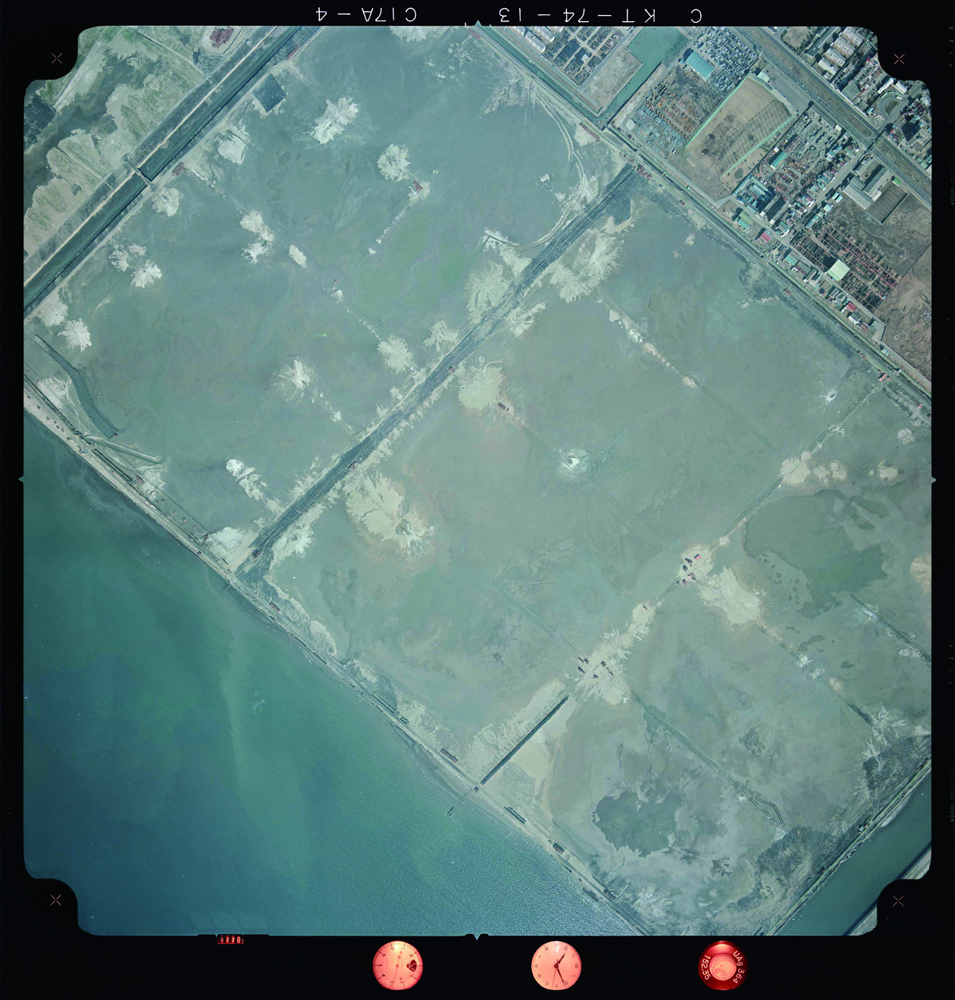
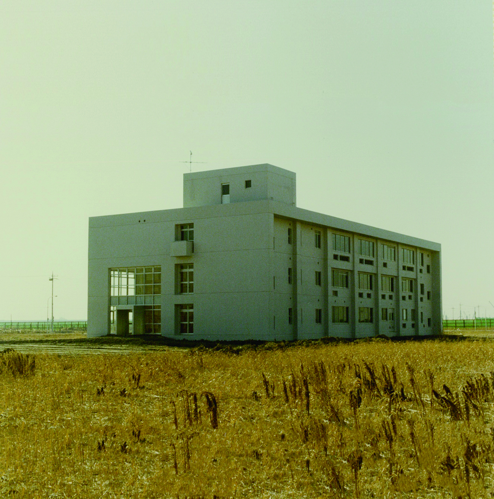
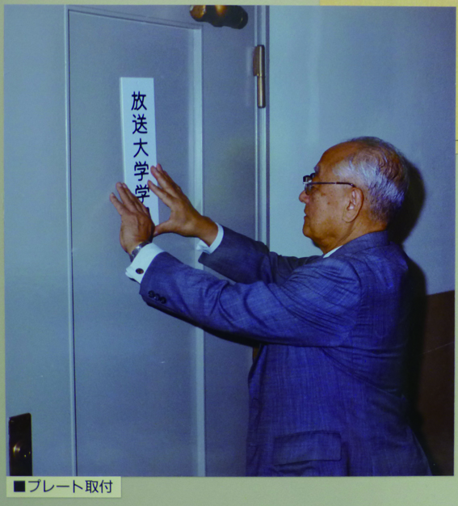
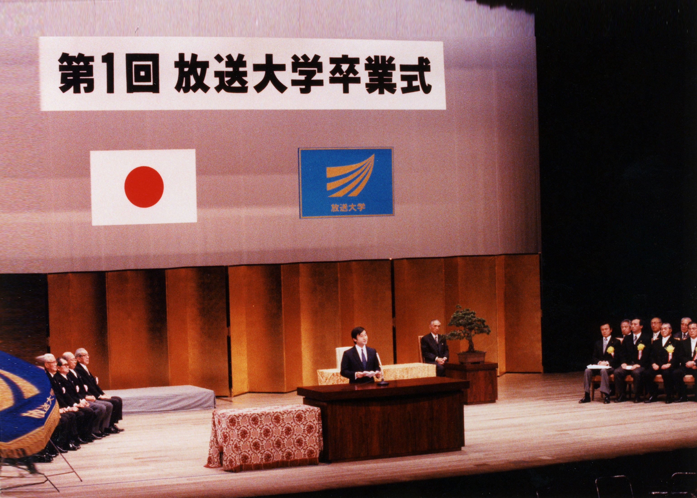
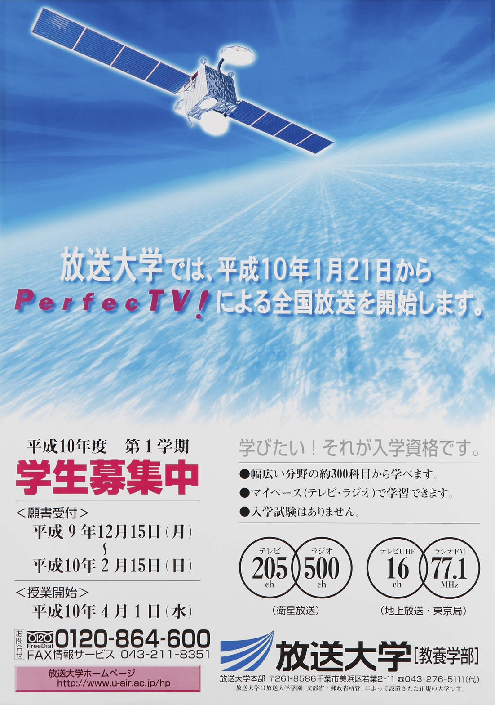
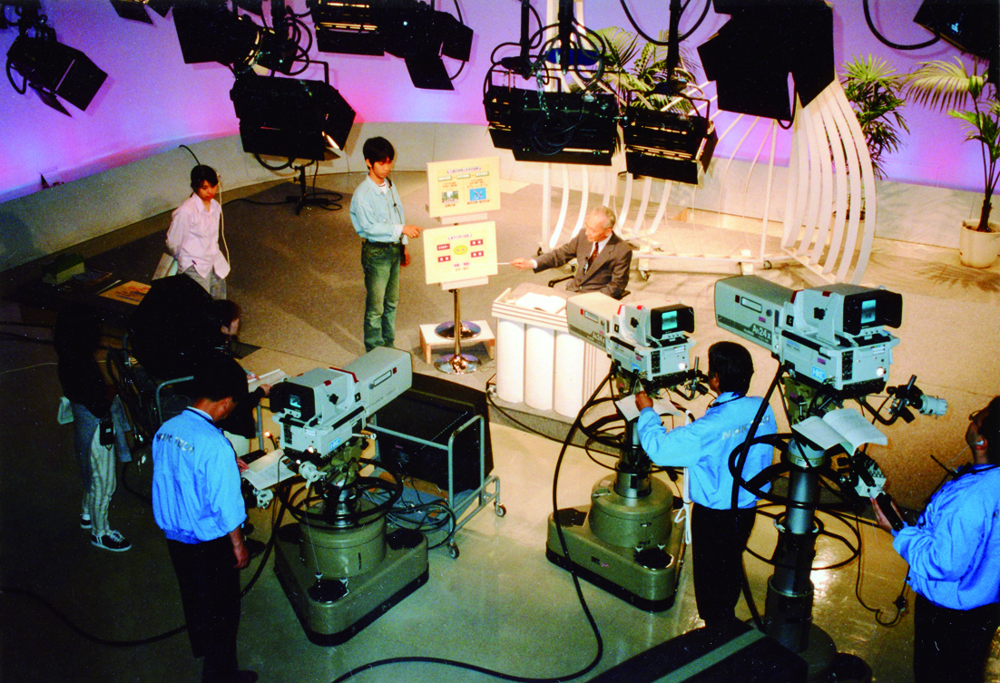

Top
>
沿革
1967-1980
昭和42年
昭和55年
① 放送を利⽤した初めての⼤学
―放送⼤学前史と⽂部省・郵政省の挑戦―

Scroll

1967
昭和42年10月
UHFテレビジョン放送局開設の方針決定
1969
昭和44年3月
文部省社会教育審議会答申「映像放送およびFM放送
による教育専門放送のあり方について」
1969
昭和44年10月
文部省「『放送大学の設立』について」発表
1969
昭和44年11月
放送大学問題懇談会（文部省・郵政省共同設置）
が文部・郵政両大臣に意見書提出
が文部・郵政両大臣に意見書提出
1970
昭和45年７月
文部省放送大学準備調査会「放送大学の設立について」報告
1970
昭和45年 10月
郵政省放送大学放送施設調査会「放送大学に必要な
放送施設について」報告
放送施設について」報告
1971
昭和46 年
放送大学実験番組の制作・放送開始（～昭和49年まで）
1974
昭和49年 ３月
文部省放送大学（仮称）設置に関す
る調査研究会議「放送大学（仮称）
の基本構想」提出
る調査研究会議「放送大学（仮称）
の基本構想」提出

1977
昭和52年４月
「放送大学創設準備室」を東京工業大学内に設置
1978
昭和53年 ４月
放送大学創設準備室を「放送教育開発センター創設
準備室」に改称、旧東京教育大学内(文京区大塚)に
移転
準備室」に改称、旧東京教育大学内(文京区大塚)に
移転
1978
昭和53年10月
国立大学共同利用機関「放送教育開発センター」設立
1978
昭和53年
予算編成において「特殊法人放送大学学園」の新設が
認められる
認められる
1979
昭和54年２月
放送大学学園法案を閣議決定、国会へ提出するも審査未了
廃案（その後も４回にわたり法案提出）
廃案（その後も４回にわたり法案提出）
1979
昭和55年 ３月
千葉市幕張地区にて管理棟着工(現・西管理棟、12月
竣工)
竣工)
1981
昭和56年６月
放送大学学園法（昭和56年法律第80号）公布・施行
廃案（その後も４回にわたり法案提出）
廃案（その後も４回にわたり法案提出）
1981-1990
昭和56年
平成2年
② 放送大学の誕生
―放送授業の始まりと学習センターの開設―

放送大学本部管理棟（現西管
理棟）竣工
1980（昭和55）年12月
1981
昭和56年７月
放送大学学園設立（特殊法人として創設）

2021（令和３）年 解体後の鉄塔部分、
中央部分を保存して鉄塔モニュメントとした。
1981
昭和56年10月
放送大学(仮称)設置認可申請

放送大学の仮事務所を世田谷区の旧図書
館短期大学校舎へ移転 1981（昭和
56）年9月
1983
昭和58年１月
放送大学設置認可

建設中の放送大学本部 1982（昭和57）年10月～
1983
昭和58年２月
東京テレビジョン放送局、東京超短波放送局
の予備免許を受ける
の予備免許を受ける
1983
昭和58年４月
放送大学設置
1984
昭和59年４月
「放送大学教育振興会」発足
1984
昭和59年 10月
群馬、埼玉、千葉、東京第一、東京第二、神奈川の６
学習センター設置
学習センター設置
1984
昭和52年４月
関東地区(茨木・栃木・東京文京・東京
足立・東京多摩)の学習センター・サテライ
トスペースが被災
足立・東京多摩)の学習センター・サテライ
トスペースが被災

1984
昭和59年 10月
東京テレビジョン放送局、東京超短波放送局の放送局
免許および幕張固定局の無線局免許を受ける
免許および幕張固定局の無線局免許を受ける
1984
昭和59年 11月
東京放送局予告放送開始
1984
昭和59年 12月
初の学生募集開始
1985
昭和60年４月
放送（テレビ及びFMラジオ）による授業開始(３学期制)
管理棟と研究棟が完成した放送大学本部
1985（昭和60）年2月
1985
昭和60年 ４月
学習センター（群馬・埼玉・千葉・東京第一・東京第
二・神奈川）学生受入れ開始
二・神奈川）学生受入れ開始
1986
昭和61年４月
臨時教育審議会第２次答申（放送大学について「対象地域の拡大について検討」
1987
昭和62年 ４月
諏訪地区学習センター設置、学生受入れ開始
1987
昭和62年11月
アジア公開大学連合（ＡＡＯＵ）加盟
1988
昭和63年12月
「放送大学校旗」を制定(後に学旗と呼称)

第1回放送大学卒業式 1989（平成元）年
1989
平成元年２月
「放送大学学歌」を制定
1989
平成元年４月
３学期制から２学期制への移行
1989
平成元年４月
第１回放送大学卒業式の挙行
1990
平成２年 ６月
附属図書館開館
1991
平成３年７月
学園に「放送大学全国化推進計画委員会」設置
1991-2001
平成3年
平成13年
③ ひろく、深く
―放送授業を全国に、大学院の設置―
1994
平成６年６月
ビデオ学習センターを地域学習センターに改組
1997
平成９年 ４月
「放送教育開発センター」を「メディア教育開発センター」に改組
1997
平成９年 12月
大学審議会答申「通信制の大学院について」ほか答申

CSデジタル放送による全国放送開
始について書かれた学生募集ポス
ター1997（平成９）年
1998
平成10年 １月
CSデジタル放送による全国放送開始

1997（平成９）年頃の収録の様子
1998
平成10年３月
「大学院設置基準」、「大学通信教
育設置基準」が改正
育設置基準」が改正
1998
平成10年４月
地区学習センター及び地域学習セン
ターを学習センターに改組
ターを学習センターに改組
1998
平成10年４月
すべての都道府県への学習センターの設置完了
1998
平成10年10月
関東以外の全国の学習センターにおいて全科履修生の受入れを開
始、面接授業を開講
始、面接授業を開講
1999
平成11年１月
部の番組において聴覚障害者向けの字幕放送開始
2000
平成12年１月
国際遠隔教育会議（ＩＣＤＥ）加盟
2001
平成13年４月
放送大学大学院修士課程設置
2002
平成14年12月
放送大学の設置主体を「特別な学校法人」とするための「放送大
学学園法」（平成14年法律第156号）公布
学学園法」（平成14年法律第156号）公布
2002-2019
平成14年
令和元年
④ 多様化するメデイアによる遠隔教育
2003
平成15年10月
放送大学学園が特殊法人から特別な学校法人に移行
2004
平成16年４月
メディア教育開発センターが大学共同利用機関から独立行政
法人に移行
法人に移行
2006
平成18年 12月
放送大学が一部地域で地上デジタル放送開始

2006（平成21）年
2007
平成19年５月
ラジオ授業科目のインターネット配信開始
2007
平成19年
テレビ授業科目の次年度開設科目のうち６科目につい
てインターネット配信を前提に番組制作実施
てインターネット配信を前提に番組制作実施
2007
平成19年７月
在学生向けのインターネットによる科目登録申請受付開始
2008
平成20年６月
テレビ授業科目の試行的インターネット配信実験開始
2008
平成20年 11月
新教務情報システム(システムＷＡＫＡＢＡ)運用開始
2009
平成21年４月
独立行政法人メディア教育開発センターの廃止にともない放送大
学に「ＩＣＴ活用・遠隔教育センター」
学に「ＩＣＴ活用・遠隔教育センター」
2010
平成22年12月
テレビ会議システムを活用した面接授業の試行実施(現・オンラ
イン教育センター）」を設置し、事業を継承
イン教育センター）」を設置し、事業を継承
2011
平成23年３月
東日本大震災により、本部、東北地区(八戸・岩手・宮城・秋田・山形・福島・いわき)
2011
平成23年３月
電波法の改正にともなう地上アナログ放送の終了
2011
平成23年７月
電波法の改正にともなう地上アナログ放送の終了
2011
平成23年 10月
BSデジタル放送による放送授業開始
2011
平成23年～24年
テレビ授業科目及びラジオ授業科目について、インター
ネット配信サービスを実施する
ネット配信サービスを実施する
2012
平成24年 ３月
CSデジタル放送終了
2013
平成25年４月
教養学部情報コース、大学院情報学プログラム設置
2014
平成26年４月
放送大学大学院博士後期課程設置
2015
平成27年４月
すべての教材をインターネットで提供するオンライン授業を開講
2015
平成27年
ラジオ科目について、字幕・静止画を付与したコンテンツを学生専用
Ｗｅｂサイトから実験配信開始
Ｗｅｂサイトから実験配信開始
2016
平成30年９月
地上デジタル放送及びFMラジオ放送終了
2016
平成30年12月
「キャリアアップ支援認証制度」創設